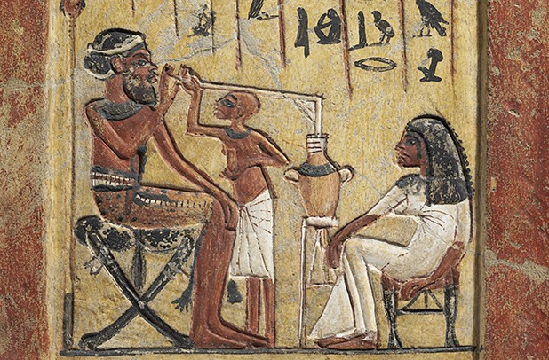
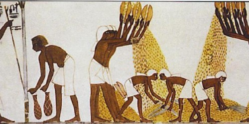
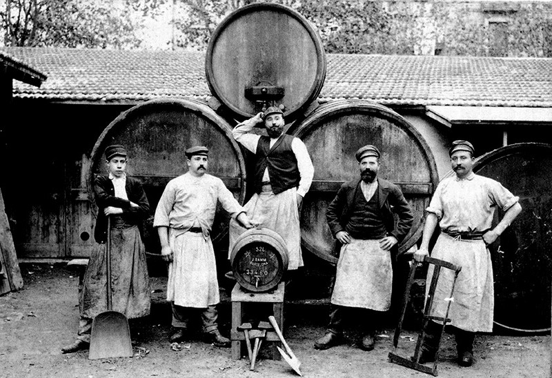

CERVEZA 🍺
Su origen de la cerveza data de 4 mil a.C, en la zona de la Mesopotamia del Oriente Medio, hace más de siete mil años. La evidencia más antigua es una tablilla en la que se observan varias personas tomando cerveza de un mismo recipiente. Los Babilonios heredaron de ellos las tareas del cultivo de la tierra y la elaboración de cerveza en una tabla de arcilla, la cual explica su fórmula de elaboración.
Su descubrimiento fue accidental: se mezcló agua con cereales y sucedió el milagro. Como resultado los sumerios humedecían el pan con agua y la levadura fermentaba la mezcla que la convertía en bebida alcohólica. Se producía un ritual en el que la gente se unía. La historia de la cerveza es también la de la agricultura: los asentamientos se forjaban alrededor de los cultivos. Lo relevante es que era un alimento ya que tenía una fuente de azúcar difícil de conseguir.
En Egipto la denominaron “zythum” y era esencial en la dieta cotidiana. Mientras que el vino era para las clases altas, la cerveza era para el pueblo. En época de los faraones, sus fábricas producían hasta 4 millones de litros por año, tanto, que los graneros estaban prácticamente destinados a la cebada para su elaboración y la utilizaban como moneda de cambio. Los egipcios fueron los primeros en mercantilizar la cerveza. Como buenos comerciantes, dado que el precio este cereal era elevado, utilizaban una variedad del trigo: la espelta. Además, descubrieron la malta, le agregaron azafrán, miel, jengibre y comino para darle sabor y color.
Los griegos heredaron las técnicas de fabricación de cerveza de los elaboradores de Egipto, y a su vez traspasaron este conocimiento a los romanos, que la llamaron "cerevisina", en honor de la diosa Ceres de la agricultura. Una vez extendida, se utilizaban los granos de cereales disponibles de cada zona: en China el trigo, en Rusia el centeno y en Japón, el arroz. De allí surge el sake, que es considerada la cerveza más antigua utilizada en ritos sociales en honor a los dioses. En la Antigüedad, en China también se elaboraba cerveza llamada "kiu", utilizando cebada, trigo, espelta, mijo y arroz, mientras que las civilizaciones precolombinas de América utilizaban maíz en lugar de cebada La cerveza de cebada proviene de Europa, trasladándose desde Armenia, Georgia y el sur de Rusia hasta Bohemia, Alemania, Bélgica y las Islas Británicas, donde se convertiría en aquella cerveza que conocemos en la actualidad.
